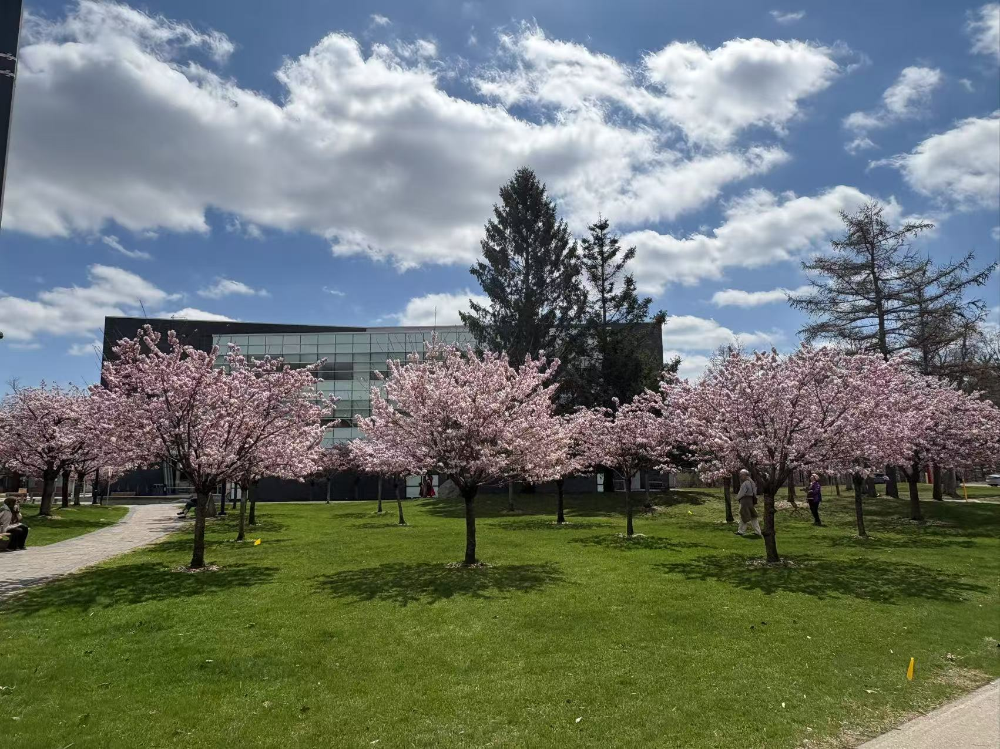

Shengtao Liu
Skill Summary
- Software & Web Development: Proficient in Python, Java, SQL, HTML, CSS, JavaScript, and PHP. Built full-stack web applications using HTML/CSS/JavaScript and MySQL, including custom features and front-end interactivity. Familiar with Git and unit testing.
- ETL & Data Analysis: Strong understanding of data modeling and ETL pipelines. Experienced in data extraction, transformation, and analysis using Python (pandas, matplotlib), R, SQL (MySQL), and Excel. Conducted full-cycle academic research involving complex datasets.
- Networking & Systems: Knowledge of IP networking and core networking concepts from academic coursework and personal projects. Proficient with Linux environments and comfortable performing command-line tasks and system configurations.
- Communication & Collaboration: Strong relationship-building and communication skills developed through leading teams and teaching programming (HTML, CSS, JavaScript) to students. Experienced in collaborative, fast-paced environments requiring clear documentation and verbal explanation of technical concepts.
- Problem Solving & Collaboration: Demonstrated strong analytical and troubleshooting skills through academic and independent projects. Comfortable working in agile environments and collaborating with interdisciplinary teams.
Education
Honors Bachelor of Science (Co-op) 2023-Present
University of Toronto Scarborough, Scarborough, ON.

- Mathematics/Computer Science Co-op, 2nd year
- Cumulative GPA of 4.0/4.0
- 2024 - Dean's List
Relevant Experience
Full-Stack Web Development Project
- Designed and developed a web-based journal app using HTML, CSS, JavaScript, PHP, and MySQL to help users log entries, edit content, and visualize word usage over time.
- Built secure login/authentication, real-time input validation, and a responsive interface using custom CSS.
- Leveraged MySQL for storing and retrieving structured journal data and implemented dynamic features using JavaScript.
Coding Instructor – CodeSky, Markham
- Teach HTML, CSS, and JavaScript to students from elementary to high school. Guide them through front-end development projects while adapting explanations to different learning styles.
- Introduce Foster a collaborative and supportive environment by encouraging group work and peer feedback.
- Enhanced students’ communication skills and technical confidence by simplifying complex topics into digestible lessons and real-time coding demos.
MySQL Instagram Clone project
- Developed and managed a scalable MySQL database to
replicate Instagram's dataset, inputting over 100,000 records, and leveraging Python to automate data processing, improve performance, and streamline data handling. This approach led to the extraction of over 20 actionable insights related to user behavior, content engagement, and trends, utilizing complex query analysis.
- Designed and implemented robust relationships between data types and tables using primary and foreign keys, optimizing query performance through advanced techniques such as joins, subqueries, and window functions. These improvements led to a significant increase in efficiency for data manipulation within large datasets, enabling faster insights and smoother data processing.
Linguistics Research Project (in R)
- Designed and led a full-cycle research study analyzing language patterns using R, including proposal drafting, data creation, cleaning, statistical modeling, and academic reporting.
- Applied regression and exploratory data analysis techniques, while maintaining reproducible code and clear documentation for presentation and peer review.
Python project on Ontario bridge
- Developed a Python tool that efficiently processes and analyzes Ontario bridge data, enabling users to explore patterns, identify trends, and generate actionable insights to improve infrastructure management and decision-making.
- Constructed a predictive model for maintenance rates and costs using quantitative analysis, creating an automated system that accurately assesses infrastructure needs and assigns the appropriate inspector, improving operational efficiency and resource allocation.
Lead – Social Science Research Group Project
- Conducted an in-depth survey to gather 2000+ participants’ opinions and preferences regarding a specific TV show, performing data extraction and transformation using Python and SQL, resulting in meaningful data-driven reports and a paper.
- Effectively utilized PowerPoint to present TV show analysis and cultural trends, incorporating data visualizations to increase audience engagement and spark positive discussions about the TV show's cultural impact.
Contact Information
Hobbies